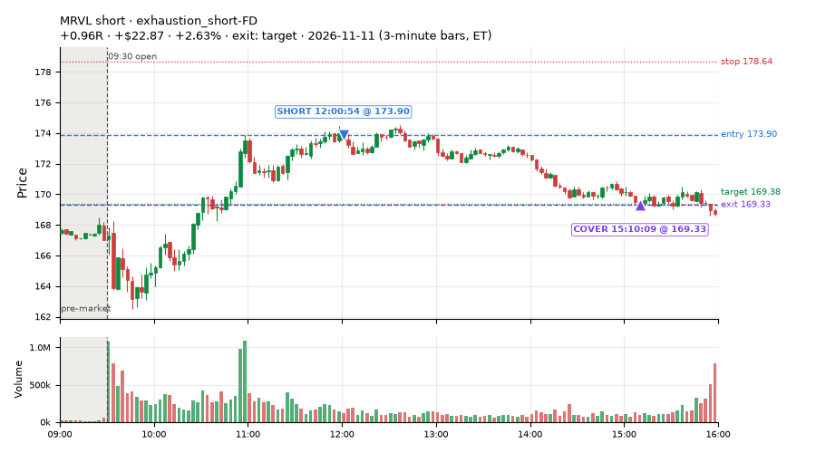
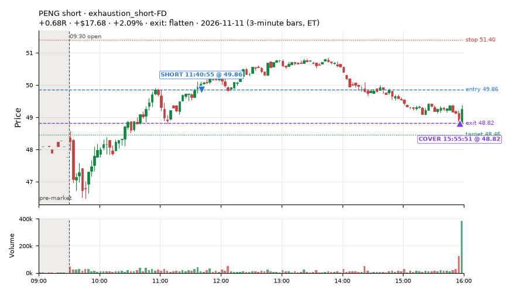
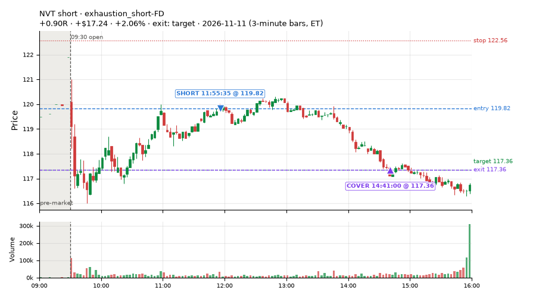
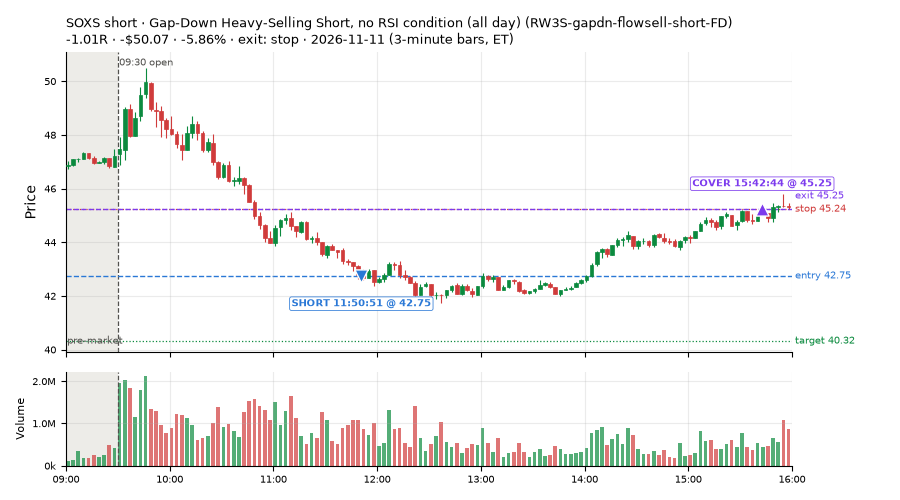
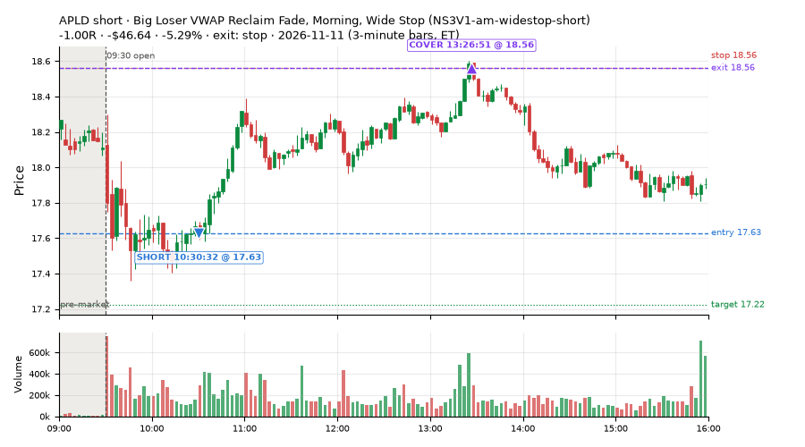
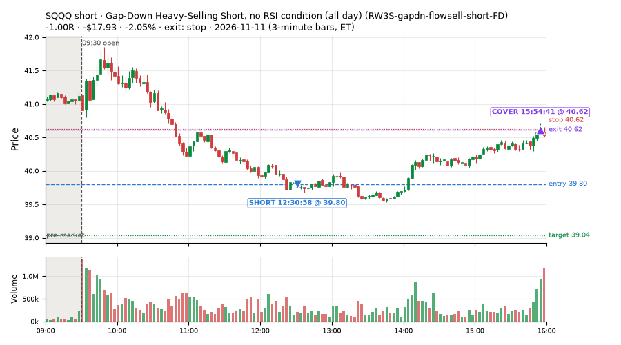
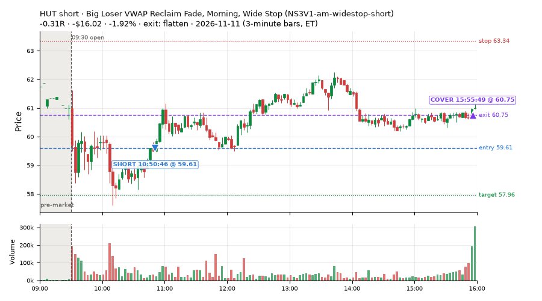
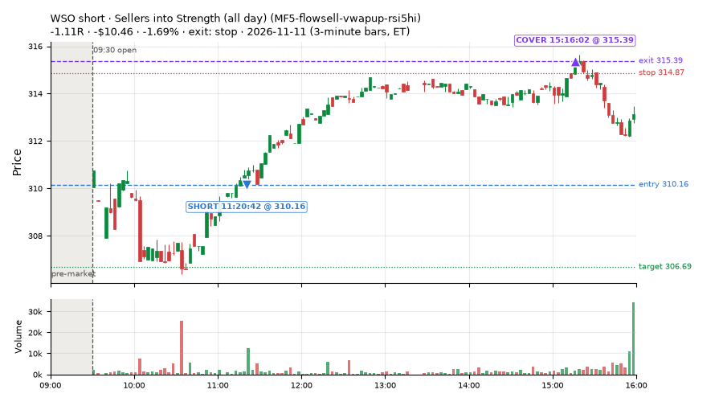

79 trades · win rate 41% · P/L $-147.78
PROBATION: no live setup has passed both locked test periods. 10 owner-directed setups added 2026-10-08 (MarcoFlow top 5 + 5 new), untested live. RW6G1 (RW6 + VWAP band guard) added 2026-10-09, probation.

| Symbol | Setup | Side | In | Out | Entry | Exit | Exit reason | % gained | P/L |
|---|---|---|---|---|---|---|---|---|---|
| MRVL | exhaustion_short-FD | short | 12:00 | 15:10 | 173.90 | 169.33 | target | +2.63% | $22.87 |
| PENG | exhaustion_short-FD | short | 11:40 | 15:55 | 49.86 | 48.82 | flatten | +2.09% | $17.68 |
| NVT | exhaustion_short-FD | short | 11:55 | 14:41 | 119.82 | 117.36 | target | +2.06% | $17.24 |
| Symbol | Setup | Side | In | Out | Entry | Exit | Exit reason | % lost | P/L |
|---|---|---|---|---|---|---|---|---|---|
| SOXS | RW3S-gapdn-flowsell-short-FD | short | 11:50 | 15:42 | 42.75 | 45.25 | stop | -5.86% | $-50.07 |
| APLD | NS3V1-am-widestop-short | short | 10:30 | 13:26 | 17.63 | 18.56 | stop | -5.29% | $-46.64 |
| SQQQ | RW3S-gapdn-flowsell-short-FD | short | 12:30 | 15:54 | 39.80 | 40.62 | stop | -2.05% | $-17.93 |
| HUT | NS3V1-am-widestop-short | short | 10:50 | 15:55 | 59.61 | 60.75 | flatten | -1.92% | $-16.02 |
| WSO | MF5-flowsell-vwapup-rsi5hi | short | 11:20 | 15:16 | 310.16 | 315.39 | stop | -1.69% | $-10.46 |








Signal to fill: median 2s, 90th percentile 4s (79 trades). Bars close each minute; the order follows the bar close.
Best excursion (MFE): median 0.21R; worst (MAE) median 0.68R. 53% of trades never got +0.25R in our favour; 0 reached +1R and still closed at or below 0.
| Symbol | Setup | Best R | Worst R | Closed R |
|---|---|---|---|---|
| CAVA | RW3S-gapdn-flowsell-short-FD | +0.43 | -1.00 | -1.02 |
| JNJ | RW3S-gapdn-flowsell-short-FD | +0.41 | -1.08 | -1.02 |
| SOXS | RW3S-gapdn-flowsell-short-FD | +0.41 | -1.01 | -1.01 |
| PGR | RW3S-gapdn-flowsell-short-FD | +0.35 | -1.14 | -1.06 |
| PGR | RW1-gapdn-bounce-flowsell-short-FD | +0.35 | -1.14 | -1.06 |
| Entry time | Trades | Win | Avg R | P/L |
|---|---|---|---|---|
| 09:50-10:30 | 26 | 42% | -0.26 | $-67.74 |
| 10:30-11:30 | 20 | 35% | -0.35 | $-92.22 |
| 11:30-13:00 | 21 | 48% | -0.21 | $0.64 |
| 14:00-16:00 | 12 | 33% | +0.08 | $11.54 |
| Setup | Trades | Win | Avg R | Adj R (net of SPY) | Avg R ex-market (all sessions) | P/L |
|---|---|---|---|---|---|---|
| Failed Prior-Day-Low Break, SPY-Range Regime (short leg) (CWT14-failbrk-pdl-p05-R2A-short) | 10.0 | 60% | -0.07 | -0.06 | -0.08 (beta -0.50, n 32) | $-9.00 |
| Failed Prior-Day-Low Break Long (CWT14-failbrk-pdl-p10-long) | 8.0 | 50% | -0.27 | -0.64 | -0.07 (beta +1.25, n 570) | $-21.31 |
| Failed Prior-Day-Low Break Long (0.1 ATR, low volume) [fill] (CWT14-failbrk-pdl-p10-lowvol-long) | 3.0 | 100% | +0.55 | -0.38 | -0.06 (beta +1.28, n 240) | $8.15 |
| Early Sellers, Strong Heat (MF4-h40-open-flowsell) owner-directed; holdouts once: Sep-Oct -0.117R n147, Apr-Jun -0.017R n735 | 3.0 | 0% | -1.03 | -0.31 | – | $-13.31 |
| Sellers into Strength (all day) (MF5-flowsell-vwapup-rsi5hi) owner-directed; holdouts once: Sep-Oct -0.001R n264, Apr-Jun -0.010R n1199 | 10.0 | 20% | -0.55 | -0.10 | +0.14 (beta -1.01, n 29) | $-32.11 |
| Gap-Down Capitulation Buy (near-miss) (NM-AR-AM-gapdown-capitulation-long) | 1.0 | 100% | +1.04 | +0.62 | -0.43 (beta +1.30, n 59) | $10.01 |
| Afternoon Higher-Low Long (near-miss) (NM-HL-T75-pm-long) | 2.0 | 0% | -0.29 | -0.25 | +0.07 (beta +1.71, n 54) | $-12.08 |
| Big Loser VWAP Reclaim Fade, Morning, Wide Stop (NS3V1-am-widestop-short) | 7.0 | 29% | -0.25 | -0.17 | -0.32 (beta -0.28, n 49) | $-76.24 |
| Afternoon VWAP Reclaim Fade (NS4-pm-vwap-reclaim-oversold-short) owner-directed; holdouts once: Sep-Oct -0.086R n49, Apr-Jun -0.080R n342 | 3.0 | 100% | +1.00 | +0.87 | +0.00 (beta -2.24, n 19) | $33.60 |
| Gap-Down Bounce Short, Heavy Selling (all day) (RW1-gapdn-bounce-flowsell-short-FD) | 5.0 | 0% | -0.84 | -0.68 | -0.04 (beta -1.62, n 80) | $-22.98 |
| Gap-Down Heavy-Selling Short, no RSI condition (all day) (RW3S-gapdn-flowsell-short-FD) | 16.0 | 6% | -0.71 | -0.59 | -0.20 (beta -1.33, n 220) | $-131.84 |
| exhaustion_short-FD | 11.0 | 91% | +0.59 | +0.64 | -0.04 (beta -0.87, n 100) | $119.33 |
Market direction (SPY, beta 1) accounted for $-55.47 of today's $-147.78; the rest ($-92.31) came from the setups themselves. Avg R net of SPY: -0.17 (incl. a hedge leg's cost; report only).
17 setups live today. Today: 127 signals, 79 taken, 5 lost because another setup held the symbol (4%). Since 2026-10-12 (23 sessions): 10056 signals, 5092 taken, 726 lost to other setups (7%). Peak open positions today 49 of 400 slots. Earnings blackout removed 928 symbols before scanning.
Simulated playing time (not live): 4947 what-if trades of signals not taken, avg -0.08R, 58% winners; of them 726 lost to another setup (avg -0.20R).
Silent: LD4-st4-breadthup-t1s05-long, LD8-spy-dip030-breadthturn-spxl-holdtr-long, LD1-ns1-breadthup-t05s1-long, CWT04-backside-lh-a25-short, CWT04-backside-vwaptest-a25-short · Crowded out: MF5-flowsell-vwapup-rsi5hi, CWT14-failbrk-pdl-p05-R2A-short, NS3-failed-vwap-reclaim-short-FD · Starved: exhaustion_short-FD, NS5-sma50-flush-oversold-long-FD, RW4-ns3-adv150-short-FD, MF2-open-rsimidhi-flowsell
| Prio | Setup | Today sig / taken | Sessions | Signals / taken / trades | Taken/day | Expected/day | Lost to other setups | Lost to (setup n) | Top skip reasons | SIMULATED: not-taken n / avg R / win | Verdict |
|---|---|---|---|---|---|---|---|---|---|---|---|
| 1 | Big Loser VWAP Reclaim Fade, Morning, Wide Stop NS3V1-am-widestop-short | 20 / 7 | 14 | 113 / 49 / 49 | 3.50 | 5.30 | 3 | NS3V1-am-widestop-short 3, NM-RWR3-ns3-qqqup-early-short 1, NM-RWN3-ns3-spyup-early-short 1 | spread / quote / size 32, not shortable / shorts off 29, symbol held by another setup 3 | 64 / -0.06R / 58% | ok 17.5 entries/week |
| 2 | Gap-Down Capitulation Buy (near-miss) NM-AR-AM-gapdown-capitulation-long | 1 / 1 | 18 | 89 / 59 / 59 | 3.28 | – | 0 | – | spread / quote / size 29, other 1 | 30 / -0.16R / 43% | ok 16.4 entries/week |
| 3 | Afternoon Higher-Low Long (near-miss) NM-HL-T75-pm-long | 5 / 2 | 18 | 66 / 54 / 54 | 3.00 | – | 3 | CWT09-gapdn-vwaploss-g10-short 2, CWT09-gapdn-bounce-g10-lowerhalf-short 2, NS3V1-am-widestop-short 1 | spread / quote / size 9, symbol held by another setup 3 | 12 / +0.01R / 58% | ok 15.0 entries/week |
| 4 | Early Sellers into a Pop (index down, no gap up) (near-miss) NM-MF3-qqqdn-gapdn-FD | 0 / 0 | 16 | 58 / 34 / 34 | 2.12 | 4.90 | 4 | NM-AR-AM-gapdown-capitulation-long 4 | not shortable / shorts off 10, spread / quote / size 9, symbol held by another setup 4 | 24 / +0.27R / 62% | slow 10.6 entries/week; ~6 weeks to 60 trades |
| 5 | Big Gainer Dip-and-Pop NS1-rsidip-rsi5pop-long | 0 / 0 | 1 | 0 / 0 / 0 | 0.00 | 0.92 | 0 | – | – | 0 / – | quiet - wait no signals yet; only ~0.9 expected so far |
| 6 | Early Sellers, Strong Heat MF4-h40-open-flowsell | 4 / 3 | 1 | 4 / 3 / 3 | 3.00 | 7.24 | 0 | – | not shortable / shorts off 1 | 1 / +0.47R / 100% | ok 15.0 entries/week |
| 7 | Stretched Above VWAP Fade (far) CWT13-vwapstretch-z075-short | 0 / 0 | 23 | 46 / 25 / 25 | 1.09 | – | 0 | – | not shortable / shorts off 10, daily loss cap 4, spread / quote / size 3 | 21 / -0.47R / 29% | slow 5.4 entries/week; ~11 weeks to 60 trades |
| 8 | Gap-Down Bounce Short, Heavy Selling (all day) RW1-gapdn-bounce-flowsell-short-FD | 8 / 5 | 16 | 155 / 80 / 80 | 5.00 | 17.10 | 6 | NM-AR-AM-gapdown-capitulation-long 1, NM-HL-T75-pm-long 1, CWT12-coil-k4-long 1 | spread / quote / size 29, not shortable / shorts off 16, other 14 | 75 / +0.07R / 53% | ok 25.0 entries/week |
| 9 | Sellers into Strength (all day) MF5-flowsell-vwapup-rsi5hi | 10 / 10 | 16 | 61 / 29 / 29 | 1.81 | 15.47 | 21 | MF5-flowsell-vwapup-rsi5hi-FD 19, NM-AR-AM-gapdown-capitulation-long 1, CWT14-failbrk-pdl-p05-R2A-long 1 | symbol held by another setup 21, spread / quote / size 5, other 4 | 32 / -0.17R / 44% | crowded-out 21 of 61 signals (34%) lost to setups already holding the symbol |
| 10 | exhaustion_short-FD exhaustion_short-FD | 12 / 11 | 16 | 157 / 100 / 100 | 6.25 | 64.64 | 3 | CWT12-coil-k4-long 3 | not shortable / shorts off 31, spread / quote / size 19, other 4 | 57 / -0.13R / 47% | starved 6.25 entries/day vs ~64.64 expected |
| 11 | Failed Prior-Day-Low Break, SPY-Range Regime (long leg) CWT14-failbrk-pdl-p05-R2A-long | 0 / 0 | 8 | 201 / 136 / 136 | 17.00 | – | 6 | RW3S-gapdn-flowsell-short-FD 6 | spread / quote / size 59, symbol held by another setup 6 | 64 / -0.11R / 61% | ok 85.0 entries/week |
| 12 | Failed Prior-Day-Low Break, SPY-Range Regime (short leg) CWT14-failbrk-pdl-p05-R2A-short | 15 / 10 | 8 | 69 / 32 / 32 | 4.00 | – | 20 | CWT14-failbrk-pdl-p10-long 20, CWT14-failbrk-pdl-p10-lowvol-long 8 | symbol held by another setup 20, spread / quote / size 14, not shortable / shorts off 3 | 37 / -0.04R / 60% | crowded-out 20 of 69 signals (29%) lost to setups already holding the symbol |
| 13 | Stretched Below VWAP Bounce CWT13-vwapstretch-z05-long | 1 / 0 | 22 | 529 / 264 / 264 | 12.00 | – | 3 | CWT14-failbrk-pdh-p05-lowvol-short 1, CWT09-gapdn-vwaploss-g10-short 1, CWT09-gapdn-bounce-g10-lowerhalf-short 1 | daily loss cap 152, spread / quote / size 55, other 52 | 264 / -0.09R / 60% | ok 60.0 entries/week |
| 14 | Afternoon VWAP Reclaim Fade NS4-pm-vwap-reclaim-oversold-short | 5 / 3 | 11 | 38 / 19 / 19 | 1.73 | 3.05 | 0 | – | other 9, spread / quote / size 6, not shortable / shorts off 4 | 19 / -0.06R / 42% | slow 8.6 entries/week; ~7 weeks to 60 trades |
| 15 | Failed Prior-Day-Low Break Long (0.1 ATR, low volume) [fill] CWT14-failbrk-pdl-p10-lowvol-long | 4 / 3 | 18 | 381 / 240 / 240 | 13.33 | – | 10 | CWT14-failbrk-pdl-p10-long 3, RW3S-gapdn-flowsell-short-FD 3, CWT14-failbrk-pdl-p05-lowvol-long 2 | spread / quote / size 86, other 31, daily loss cap 12 | 138 / -0.01R / 64% | ok 66.7 entries/week |
| 16 | Failed Prior-Day-Low Break Long CWT14-failbrk-pdl-p10-long | 12 / 8 | 23 | 919 / 570 / 570 | 24.78 | – | 27 | CWT14-failbrk-pdl-p10-lowvol-long 15, CWT14-failbrk-pdl-p05-lowvol-long 4, RW3S-gapdn-flowsell-short-FD 4 | spread / quote / size 216, other 56, daily loss cap 31 | 345 / +0.03R / 68% | ok 123.9 entries/week |
| 17 | Gap-Down Heavy-Selling Short, no RSI condition (all day) RW3S-gapdn-flowsell-short-FD | 30 / 16 | 7 | 456 / 220 / 220 | 31.43 | – | 11 | CWT14-failbrk-pdl-p05-R2A-long 6, CWT14-failbrk-pdl-p10-lowvol-long 3, CWT14-failbrk-pdl-p10-long 3 | spread / quote / size 112, not shortable / shorts off 70, other 43 | 236 / -0.12R / 44% | ok 157.1 entries/week |
Every trade is attached as a CSV you can open and edit in Excel or Google Sheets. Live page: https://misiti15.github.io/MCF/live/